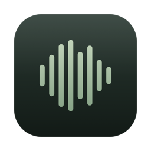
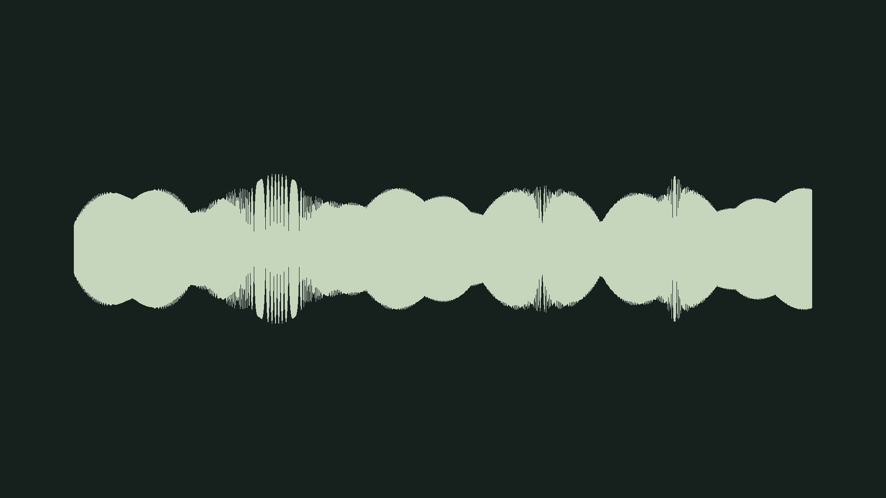

Technical Documentation
Field Sound Visualizer

A native macOS front end for turning field recordings into customizable, YouTube-ready visualizer videos with FFmpeg

The Idea
Field recordings already contain structure: amplitude, density, frequency, stereo movement, silence, and change over time. Field Sound Visualizer makes those structures visible without turning the job into a video-editing project. Drop in a recording, optionally add a still image, choose a visual language, tune a small set of meaningful controls, and export a finished 1920-by-1080 MP4.
The app is deliberately narrow. It does not have a timeline, clip editor, compositing canvas, or general-purpose effects rack. Its job is to shorten the distance between a finished recording and a considered video, while keeping FFmpeg's rendering power behind a native interface that explains what each choice does.
Make the sound visible, then get out of the way.
Workflow
- Drop or choose an audio file; the entire window acts as an import target
- Optionally add a background image and choose Fill, Fit, or Blur Fill framing
- Select one of seven visual presets and adjust only the controls relevant to that preset
- Render one 10-second preview or queue every preset for side-by-side comparison
- Scrub, loop, play full-screen, and compare completed previews inside the app
- Export a 1920-by-1080 H.264 MP4 with AAC audio, ready to upload
Seven visual languages
| Waveform | Amplitude over time, with center, lower-third, and full-frame placement |
| Scrolling Spectrum | A moving frequency history for evolving texture |
| Frequency Plot | An instantaneous view of the current frequency response |
| CQT Bands | Log-spaced pitch bands with spectral history and advanced frequency controls |
| Stereo Scope | A vectorscope for channel relationship and stereo width |
| Timeline | A complete waveform landscape with a moving playhead |
| Loudness Bloom | A continuous perceptual-loudness ribbon with persistence and glow |
Custom looks
Every preset exposes its own structure and style controls: colors, intensity, display mode, placement, smoothing, frequency range, contrast, or axis visibility where those ideas make sense. A finished combination can be saved as a custom preset, renamed, reused, or deleted. Defaults reproduce the shipped look exactly, so experimentation always has a stable point of return.
The Preview System
Final renders are expensive, so the preview system is treated as a first-class part of the product. Previews render at 960 by 540, 20 frames per second, and ten seconds long. The queue runs no more than two jobs concurrently, keeping the machine responsive while still making whole-preset comparison fast.
Completed previews live in a persistent library and are addressed by a fingerprint of the recording, image, segment, preset, and applicable settings. An exact match can be reused across launches. A settings change marks an older render as stale without making it unplayable, so a useful comparison is never destroyed merely because the current controls moved on.
- Automatic cache pruning after seven days
- One-gigabyte cache ceiling with oldest-entry cleanup
- Per-preview deletion, Clean Up, Delete All, and optional delete-on-quit
- Cancellation and failure states preserved per queue item
- Live looping mode that rebakes after visual changes without blanking the stage
Technical Approach
FFmpeg as the rendering engine
SwiftUI owns the workflow, state, transport, and visual system; FFmpeg owns the pixels and final audio. A filter-graph factory converts the selected preset and its typed parameters into a concrete graph. The app probes the installed toolchain before rendering and checks for every encoder and filter needed by the current look, including H.264, AAC, showwaves, showspectrum, showcqt, avectorscope, and ebur128.
Final output prefers Apple's hardware H.264 encoder when available and can fall back to libx264. Background images are scaled, padded, cropped, or blurred before the visualization is overlaid. Audio selects the first stream and is encoded as AAC; Original Level preserves the source level, while Match Playback passes it through normalization and a peak limiter.
Toolchain discovery
FFmpeg and FFprobe remain external dependencies. The locator checks a saved custom path, standard Homebrew locations for Apple Silicon and Intel Macs, and then the current PATH. Keeping the toolchain external avoids silently redistributing a Homebrew binary whose enabled libraries and license obligations have not been reviewed for release.
Source structure
Sources/
FieldSoundVisualizer/
AppViewModel.swift project state, preview queue, exports, and lifecycle
Models.swift presets, render settings, metadata, and cache records
PresetParameters.swift typed preset controls and defaults
Services/
FFmpegLocator.swift tool discovery and capability checks
FFprobeService.swift source metadata and stream inspection
FilterGraphFactory.swift
preset-specific FFmpeg graph construction
RenderEngine.swift process execution, progress, cancellation, and output
PreviewCache.swift stable render fingerprints and cache records
LivePreviewController.swift
loop baking and responsive visual updates
Views/ three-panel SwiftUI interface, stage, inspector, and library
LicenseKit/ shared license payload, signature, and machine identity
LicensePublisher/ private-key operations used only by the issuing side
LicenseAdmin/ separate native app for issuing and tracking licenses
LicenseTool/ command-line license administration
Offline Licensing
The app can be distributed directly without an account or a server-side activation service. A separate admin app holds an Ed25519 private key and issues a small signed license for one Mac. The shipped visualizer contains only the corresponding public key, so it can verify a license but cannot create one.
Machine identity comes from the Mac's IOPlatformUUID, salted and hashed before it is displayed as a short machine code. A license signs the holder, machine, issue date, and optional expiry as one payload. Editing any field invalidates the signature. The app never phones home; expiry and signature checks are local, and an issued license remains useful offline.
The private signing key never becomes a dependency of the app being distributed.
Tech Stack
| Platform | Native macOS 13+ application built with SwiftUI and AppKit bridges |
| Media | FFmpeg filter graphs and encoding, FFprobe metadata, AVFoundation playback |
| Rendering | H.264 video at 1920 × 1080 with AAC audio; VideoToolbox or libx264 |
| Persistence | Property lists for custom presets and JSON-backed preview-cache records |
| Licensing | CryptoKit Ed25519 signatures and SHA-256 machine identity |
| Testing | XCTest coverage for filters, parameters, previews, exports, capabilities, and licensing |
| Distribution | Swift Package Manager scripts for app bundles, signing, notarization, and license administration |
Scope
V1 is intentionally a visualizer, not an editor. There is no multitrack timeline, clip cutting, or arbitrary layer system. The bounded preview queue is the only batch operation, and final exports run one at a time. Those constraints keep the interface legible and let the app devote its complexity to the parts that matter: reliable tool discovery, understandable visual choices, reusable previews, and deterministic output.